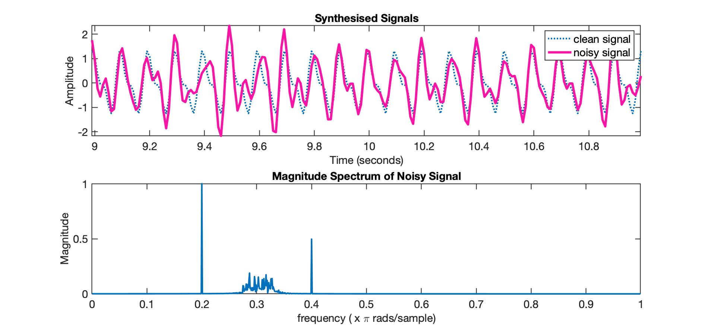

Linear Phase Filters
Ref.: David Dorran, Linear Phase Filters – why they are used, October 1, 2014 (acessado em 22/04/2024).
Objetivo: Mostrar que filtros de fase linear (FIR), preservam a forma de um sinal filtrado.
Vídeo YouTube: Why Linear Phase Filters are Used, 25.733 visualizações 15 de out. de 2014. Mostra que os filtros de fase linear preservam a forma de um sinal filtrado e compara isso com um filtro não linear.
Segue código usado durante uma apresentação de vídeo do YouTube sobre filtros de fase linear
xxxxxxxxxx%% Linear phase filters - preserve shape of a filtered signal% This is the code used during a youtube video presentation dealing with linear phase filters% Search for linear phase at http://youtube.com/ddorran% Code available from https://dadorran.wordpress.com% close all ; clear all; % clcfs = 100;T = 1/fs; %sampling intervalN = 2000; %length of signal being synthesisedn = 0:N-1; %samples of the signalt = n*T; plot_range = [N/2-100:N/2+100];%% synthesise a signalx = cos(2*pi*10*t) + 0.5*cos(2*pi*20*t + 1.4); subplot(2,1,1);plot(t(plot_range),x(plot_range))xlabel('Time (seconds)');ylabel('Amplitude')title('Synthesised Signals') axis tightSintetizando um sinal:

Adicionando ruído:
xxxxxxxxxx% Add some noisens = randn(1,length(x)+100)*2;%filter the noise to synthesise band limited noise[b a] = butter(5, [0.28 0.33],'bandpass');ns_filtered = filter(b,a,ns);%add noise to clean signalx_ns = x +ns_filtered(end-length(x)+1:end);hold onnoisy_x = plot(t(plot_range), x_ns(plot_range),'r');legend('clean signal', 'noisy signal')Gráfico do Sinal ruído:

Plotando o gráfico o espectro do sinal ruidoso:
xxxxxxxxxx%% Plot frequency Content of Noisy Signalsubplot(2,1,2)X_ns = fft(x_ns);fax = [0:N-1]/(N/2); % normalised frequency axisplot(fax(1:N/2), abs(X_ns(1:N/2))/(N/2)) ; %plot first half of spectrumxlabel('frequency ( x \pi rads/sample)')ylabel('Magnitude')title('Magnitude Spectrum of Noisy Signal')Gráfico o espectro do sinal ruidoso:

Filtrando o ruído do sinalusando filtro IIR (de fase não linear):
xxxxxxxxxx%% Filter out the noise using an IIR filter (non-linear phase)[b_iir a_iir] = cheby1(10, 0.5, [0.27 0.34], 'stop');y_iir = filter(b_iir,a_iir, x_ns); [H_iir w] = freqz(b_iir,a_iir); %determine frequency responsesubplot(2,1,2);hold onplot(w/pi, abs(H_iir),'r')legend('|X(\omega)|','|H(\omega)|')Espectro do sinal ruidoso filtrado usando filtro IIR (fase não linear):
xxxxxxxxxx% pauseY_iir = fft(y_iir);plot(fax(1:N/2), abs(Y_iir(1:N/2))/(N/2),'g') ; %plot first half of spectrumlegend('|X(\omega)|','|H(\omega)|','|Y(\omega)|')Gráfico da primeira metade do espectro:

xxxxxxxxxx% pausesubplot(2,1,1)non_linear_y = plot(t(plot_range),y_iir(plot_range),'g')legend('clean signal', 'noisy signal','filtered signal')% pause set(noisy_x,'visible', 'off')Novo espectro do sinal:

Examinando a magnitude e fase do filtro IIR:
xxxxxxxxxx%% Examine the magnitude and phase response of the IIR filterfigure(2)subplot(2,1,1)plot(w/pi,abs(H_iir))xlabel('frequency ( x \pi rads/sample)')ylabel('Magnitude')title('Magnitude Response of filter')subplot(2,1,2)plot(w/pi,angle(H_iir))xlabel('frequency ( x \pi rads/sample)')ylabel('Phase Shift')title('Phase Response of filter')Resultado do Espectro do filtro IIR:
Agora usando um filtro FIR (com fase linear):
xxxxxxxxxx%% Now filter using an FIR filter (with linear phase)b_fir = fir1(100, [0.27 0.34],'stop');a_fir = 1;y_fir = filter(b_fir,a_fir, x_ns); figure(1)subplot(2,1,1)plot(t(plot_range),y_fir(plot_range),'k')legend('clean signal', 'noisy signal','filtered signal (non-linear)','filtered signal (linear)')Sinal filtrado usando filtro FIR (com fase linear):

Calculando espectro do sinal filtrado usando filtro FIR (com fase linear):
xxxxxxxxxx[H_fir, w ]= freqz(b_fir,a_fir);subplot(2,1,2)plot(w/pi, abs(H_fir),'k')legend('|X(\omega)|','|H(\omega) Non-linear|','|Y(\omega)|','|H(\omega)| linear')Espectro do sinal filtrado usando filtro FIR (com fase linear):
Comparando a resposta frequencial dos 2 filtros:
xxxxxxxxxx%% Compare the frequency responses of the two filter design approachesfigure(2)subplot(2,1,1)hold onplot(w/pi,abs(H_fir),'g')legend('non-linear filter','linear filter')subplot(2,1,2)hold onplot(w/pi,angle(H_fir),'g')legend('IIR filter (non-linear phase)','FIR filter (linear phase)')% pauseResposta frequencial dos 2 filtros:

Por que a fase linear preserva o formato do sinal original?
xxxxxxxxxx%% Why does linear phase preserve the shape??close allclear all; % clc;fs = 1000;t = 0:1/fs:2;x1 = cos(2*pi*3*t-pi/2);x2 = cos(2*pi*5*t-(pi/2)/3*5); % pausesubplot(3,1,1)plot(t,x1)subplot(3,1,2)plot(t,x2)subplot(3,1,3)plot(t,x1+x2,'g')hold onPorque a fase linear preserva o formato do sinal original:
Fim.
Fernando Passold, em 23/04/2024.